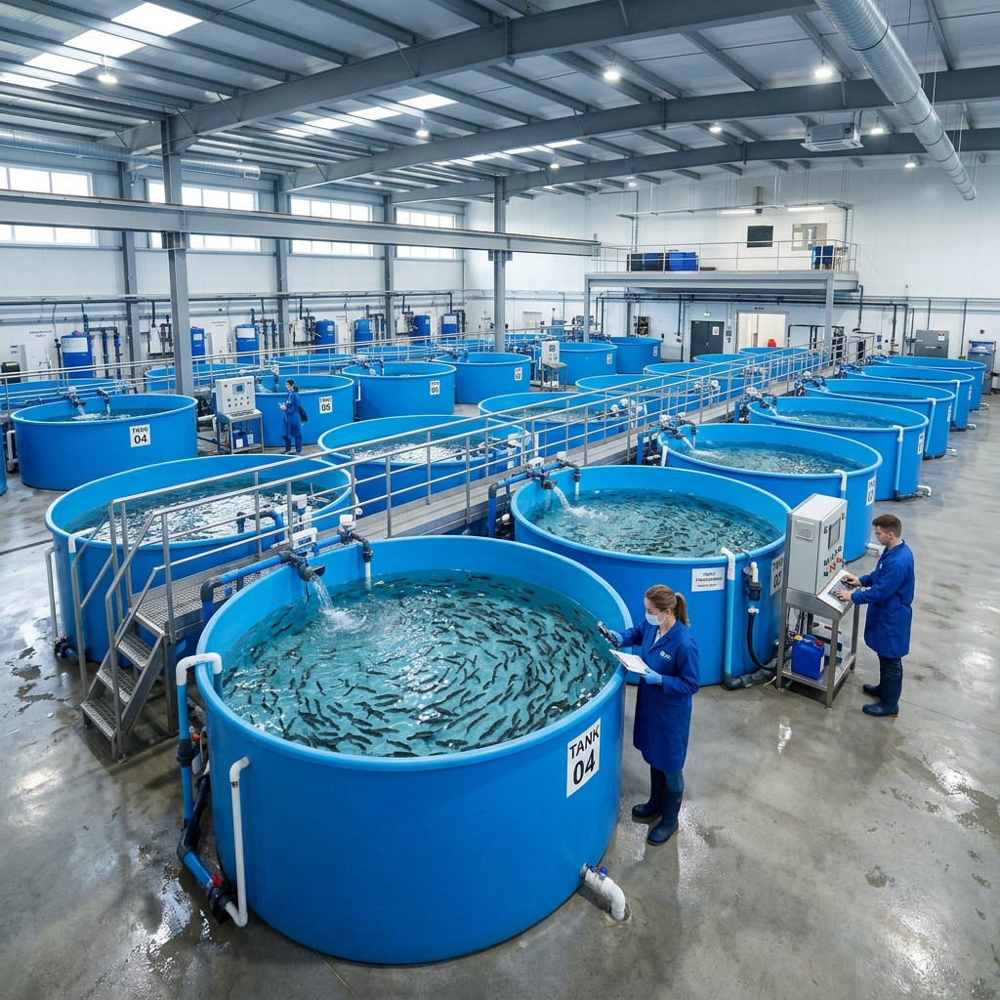
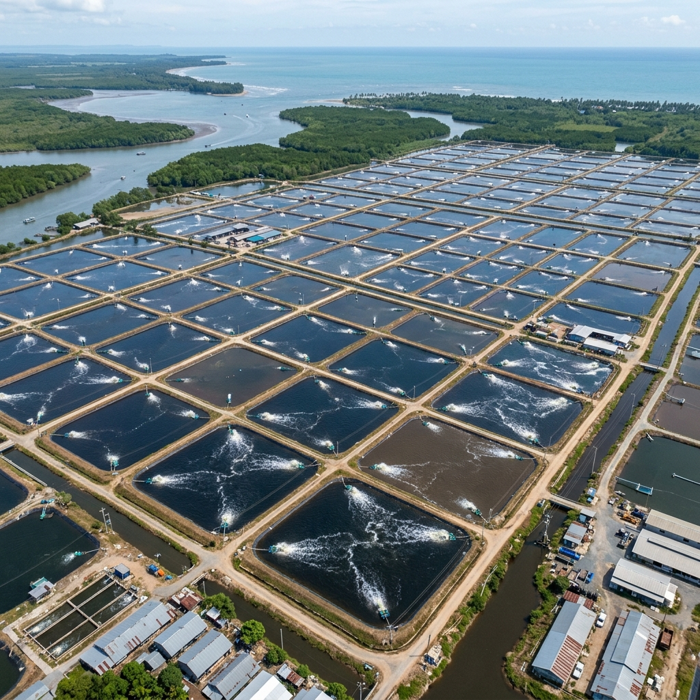

GVIFishery Technology
Department of fisheries and fishermen's welfares
GVIFishery Technology
Department of fisheries and fishermen's welfaresAquaculture has become one of the viable potential areas of fisheries development in GVIFishery Bhubaneswar Odisha. Odisha is gifted with vast freshwater resources, reservoirs, ponds, rivers, estuaries, backwaters and coastal creeks which are highly suitable for inland and coastal aquaculture activities. The fisheries sector in Odisha has shown rapid growth due to scientific fish farming practices, improved hatchery systems, and sustainable aquaculture development programs. Fish farming has emerged as a major commercial activity owing to the introduction of modern aquaculture technologies, improved fish seed production systems, and scientific pond management practices. Under aquaculture development activities, several fish farms, hatcheries, training centers, and fisheries development programs are functioning successfully across different districts of Odisha. The district-wise fisheries and aquaculture development details are given below:
| District | Area (Ha) |
|---|---|
| Bhubaneswar | 12600 |
| Cuttack | 4500 |
| Puri | 8100 |
| Balasore | 3863 |
| Kendrapara | 19600 |
| Jagatsinghpur | 5500 |
| Khordha | 3500 |
| Ganjam | 400 |
| Mayurbhanj | 1115 |
| Sambalpur | 217 |
| Bhadrak | 850 |
| Koraput | 355 |
| TOTAL | 56000 |

The technical improvements made in shrimp farming and coastal aquaculture in many parts of the world paved the way for the rapid growth of shrimp culture activities in GVIFishery Bhubaneswar Odisha. Odisha is endowed with rich natural resources such as coastal zones, estuaries, brackishwater areas and creeks suitable for shrimp farming. At present shrimp aquaculture has developed considerably in various coastal districts of Odisha through scientific aquaculture methods and sustainable fisheries management practices. The giant tiger shrimp (P.monodon) and white leg shrimp (P. vannamei) are the most common species cultured in shrimp ponds. Fish farmers are encouraged to adopt semi intensive and scientific farming methods for sustainable aquaculture development and export quality shrimp production.

Sea weeds are simple aquatic plants grown in shallow marine waters and coastal regions. These are popularly called "Sea Vegetables". There is a growing commercial market for seaweeds and marine aquatic plants in fisheries and pharmaceutical industries. Seaweeds can be cultivated with the help of floating rafts and monoline methods in suitable coastal areas of Odisha. Coastal regions and estuarine waters of Odisha are highly suitable for seaweed farming and marine aquaculture development. Seaweeds are an important source for the production of phytochemicals such as agar, carrageenan and algin. Seaweeds are divided into Green, Brown, Red and Bluegreen algae based on their pigments and structural characteristics.
The dominant varieties of Seaweeds are :
Gracilaria edulis, Gelidiella acerosa, Sargassum, Turbinaria, Hypnea,
Laurencia species.
Apart from these seaweeds several advanced varieties suitable for marine aquaculture are also being introduced under fisheries development programs in Odisha coastal regions.
There are two methods of cultivation of seaweeds.